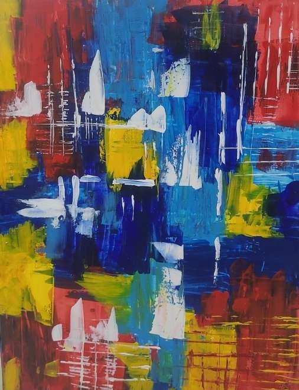
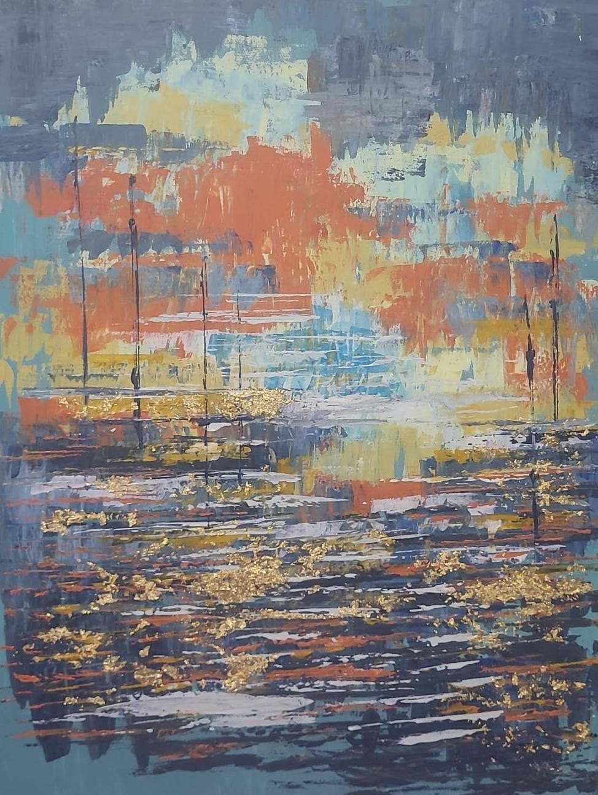
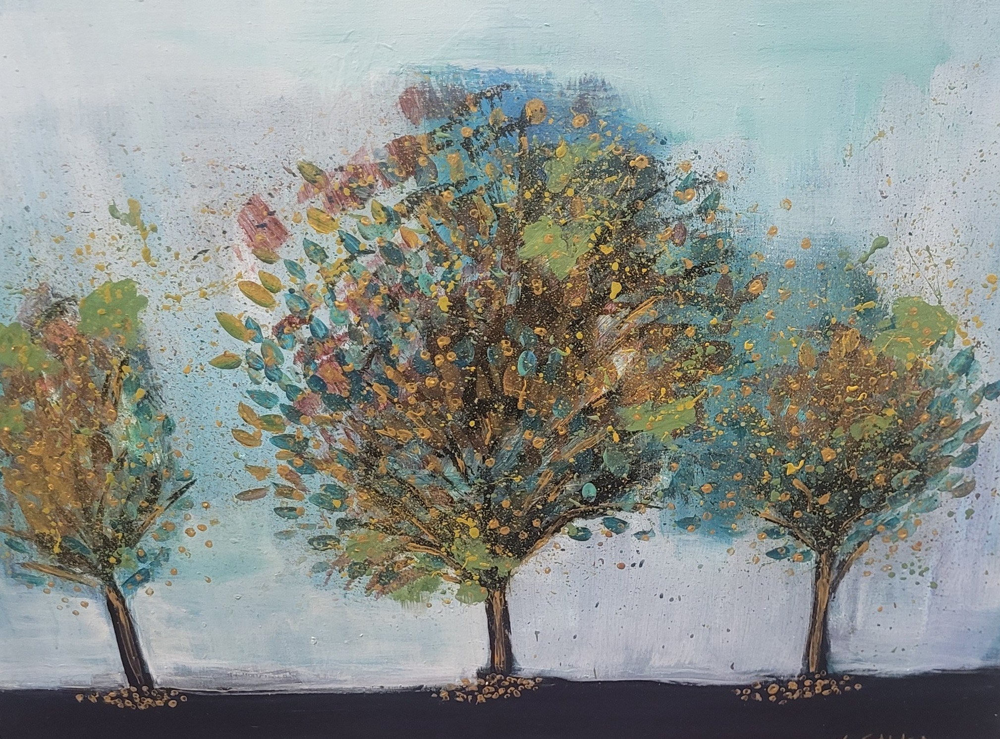
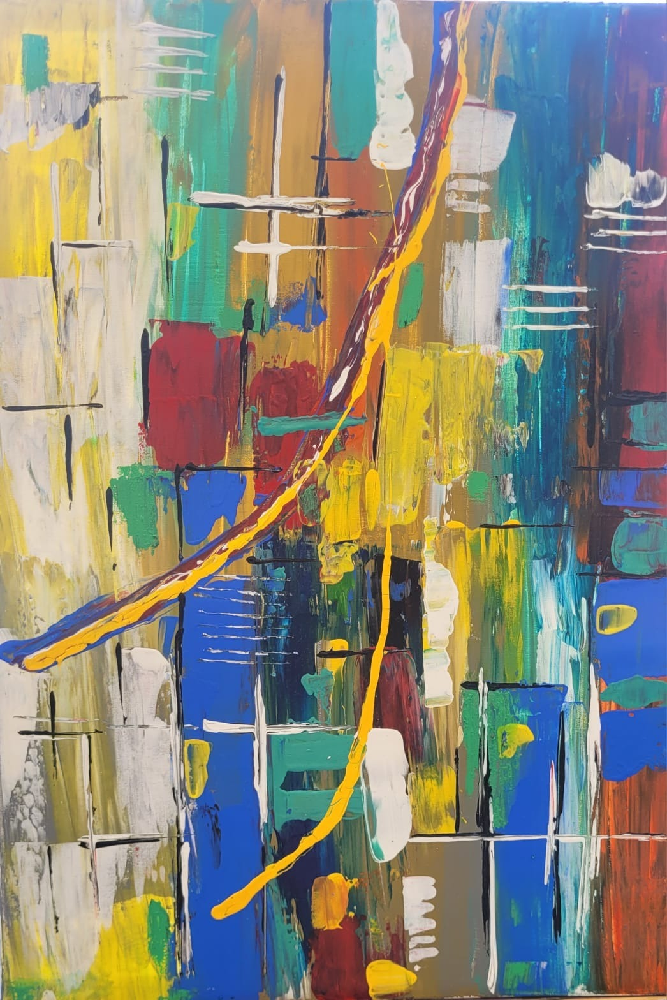
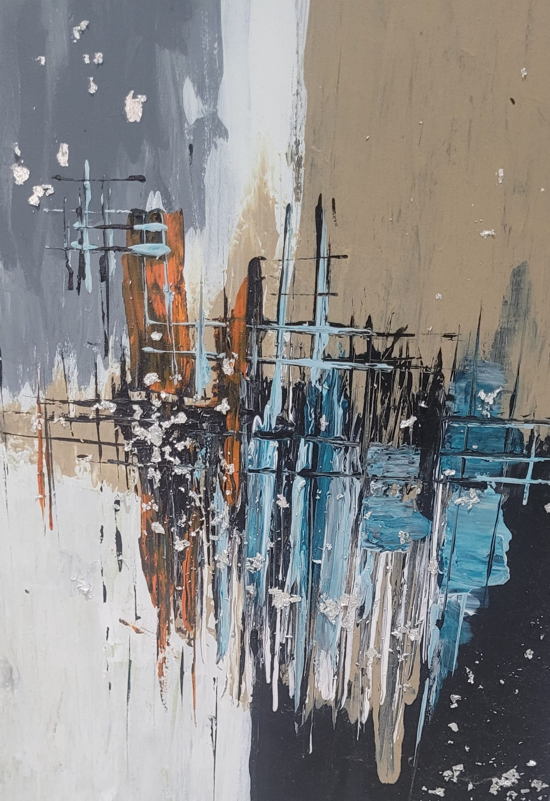
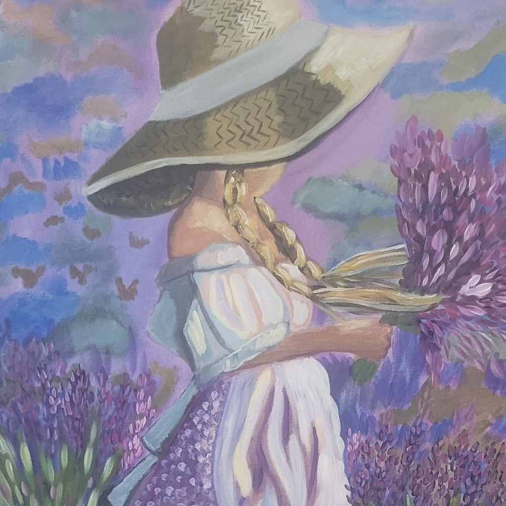
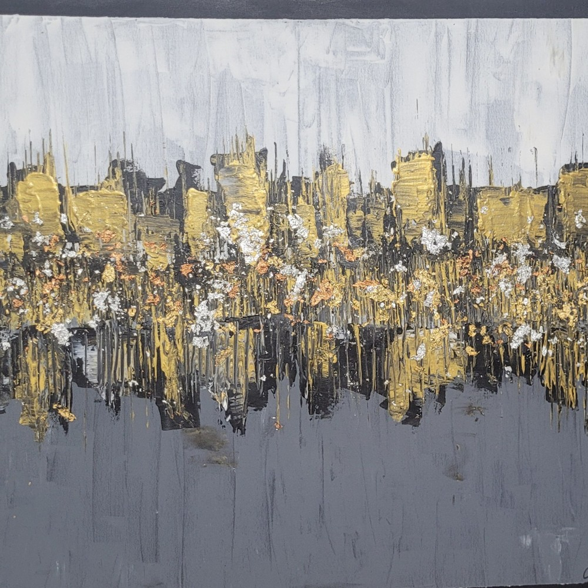
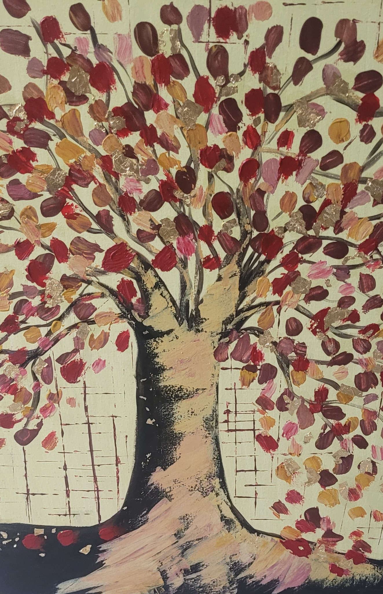
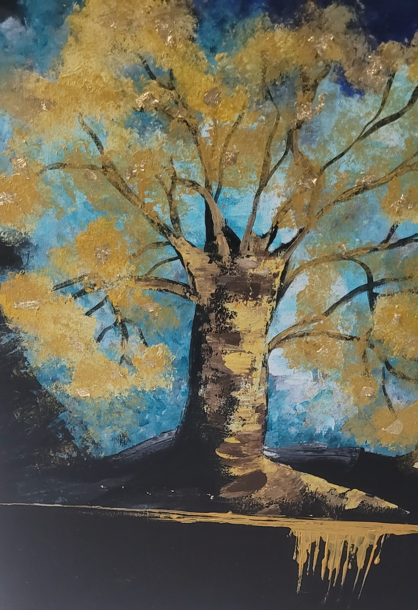
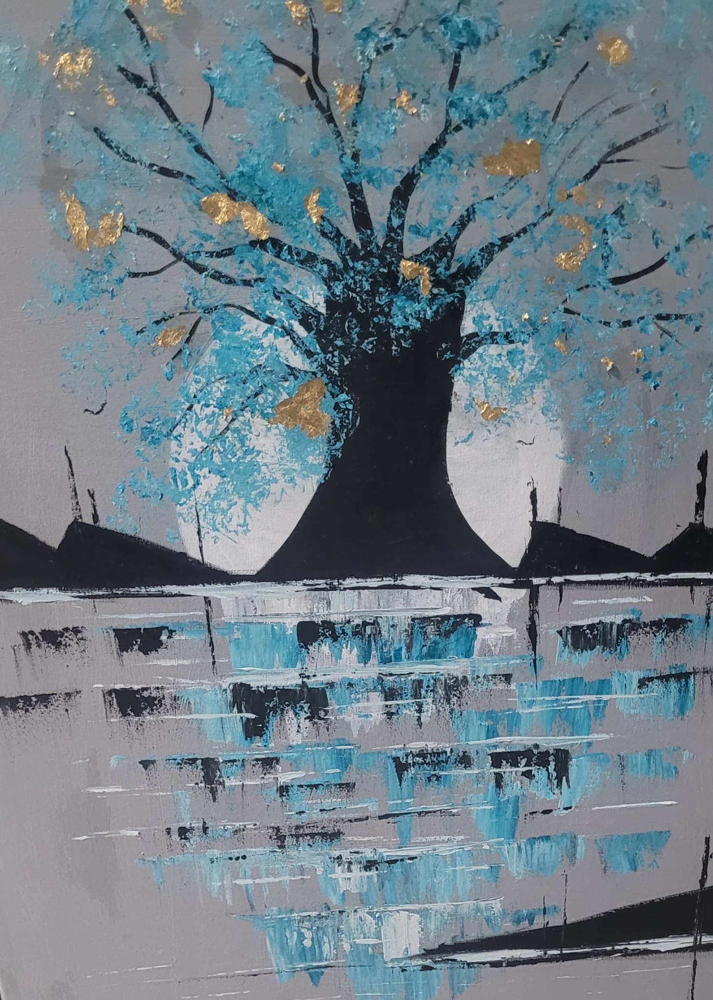

מבחר מתוך גוף היצירה של אולגה אנטל קטייב — ציור פיגורטיבי, אמנות מופשטת ועבודות חומריות. כל יצירה מוצגת פעם אחת בלבד; לחצו על עבודה לצפייה גדולה ולבירור זמינות.
עבודות מקור באמנות ישראלית עכשווית — ציור אבסטרקטי, ציור פיגורטיבי, אמנות חומר ו־mixed media. היצירות נעות בין נוף וזיכרון לבין שכבות, טקסטורה, תנועה וחוסן, ונוצרות בסטודיו של אולגה אנטל קטייב בנתיבות.

פיגורטיביחופש80×60 ס״מ · אקריליקזמינות ומחיר ביצירת קשר

פיגורטיביזיכרון120×80 ס״מזמינות ומחיר ביצירת קשר

פיגורטיבימרחב מוגן80×60 ס״מ · אקריליקזמינות ומחיר ביצירת קשר

פיגורטיביהמשכיות100×70 ס״מ · אקריליקזמינות ומחיר ביצירת קשר

פיגורטיביאור בערפל70×50 ס״מ · אקריליקזמינות ומחיר ביצירת קשר

פיגורטיביעין זוכרת70×50 ס״מ · אקריליקזמינות ומחיר ביצירת קשר

פיגורטיביהבית והדרך80×60 ס״מזמינות ומחיר ביצירת קשר

פיגורטיביחלון לבית40×40 ס״מזמינות ומחיר ביצירת קשר

פיגורטיבירוח70×50 ס״מזמינות ומחיר ביצירת קשר

פיגורטיביציפור70×50 ס״מ · אקריליק על קנבסזמינות ומחיר ביצירת קשר

מופשטשיקוף עירוני80×100 ס״מ · אקריליקזמינות ומחיר ביצירת קשר

מופשטחולות60×80 ס״מ · טכניקה מעורבתזמינות ומחיר ביצירת קשר

מופשטבין שכבות70×100 ס״מ · אקריליק ועלי זהבזמינות ומחיר ביצירת קשר

מופשטסדר מופרע70×100 ס״מ · טכניקה מעורבתזמינות ומחיר ביצירת קשר

מופשטיער זהוב50×70 ס״מ · אקריליק ועלי זהבזמינות ומחיר ביצירת קשר

מופשטעדות80×60 ס״מזמינות ומחיר ביצירת קשר

מופשטשברים ותקווה70×50 ס״מ · טכניקה מעורבתזמינות ומחיר ביצירת קשר

מופשטבין מים לשמיים70×100 ס״מ · טכניקה מעורבת על קנבס — אקריליק, חומרי טקסטורה ועלים אמיתייםזמינות ומחיר ביצירת קשר

פיגורטיביבין העצים80×60 ס״מ · אקריליקזמינות ומחיר ביצירת קשר

פיגורטיביגלי הים100×70 ס״מזמינות ומחיר ביצירת קשר

חומרי / מינימליסטימילים שנשארו100×70 ס״מ · טכניקה מעורבתזמינות ומחיר ביצירת קשר

חומרי / מינימליסטיפריחה מתוך האפר40×30 ס״מ · אקריליקזמינות ומחיר ביצירת קשר

פסיפס עירוני70×100 ס״מ · אקריליק על קנבס · זמינות ומחיר ביצירת קשר

זוהר אופקי60×80 ס״מ · אקריליק, עלי זהב וסכין ציור · זמינות ומחיר ביצירת קשר

לחשושי הרוח80×60 ס״מ · אקריליק ומשחת טקסטורה · זמינות ומחיר ביצירת קשר

מסלולים70×50 ס״מ · אקריליק על קנבס וסכיני ציור · זמינות ומחיר ביצירת קשר

מבנים של זמן70×50 ס״מ · אקריליק ועלי כסף · זמינות ומחיר ביצירת קשר

שדות בסגול70×100 ס״מ · זמינות ומחיר ביצירת קשר

ערפילית הזהב100×70 ס״מ · זמינות ומחיר ביצירת קשר

פיגורטיבישורשים של סתיו80×60 ס״מ · אקריליק על קנבסזמינות ומחיר ביצירת קשר

פיגורטיביעץ החיים80×60 ס״מ · אקריליק על קנבסזמינות ומחיר ביצירת קשר

פיגורטיביבין שמיים לאדמה80×60 ס״מ · אקריליק על קנבסזמינות ומחיר ביצירת קשר